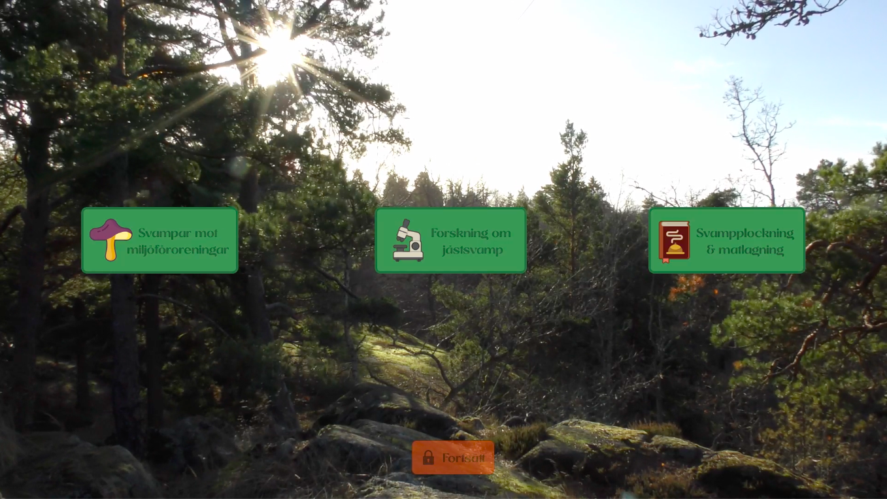
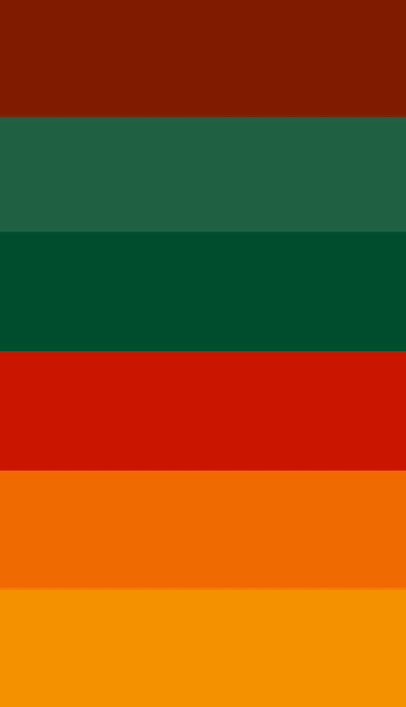

Interactive Documentary: "The Complex World of Fungi"

A collaborative two month project in the course Media Production was to make an interactive documentary about the diverse uses mushrooms and fungi. Our production team wanted to create an informative documetary to educate and promote intrest for the topic. My main responsibility was graphics and image processing, a role in which i used Photoshop to create graphical elements that fit the theme of the documentary as well as allowed for streamlined and easy-to-understand interaction for the viewer.
Interactive Structure
The documentary consisted of a main hub where viewers could choose between three different topics. Once all the topics had been viewed, the viewer got the option to continue to the outro.
Color Choices
I used a delibaretly chosen color scheme to enhance the cozy mood that we wanted to create in our documetary. Orange was used as the dominant color to evoke feelings of approachability and warmth. The accent color green is also often associated with life, nature and restfulness. These colors, coupled with other shades of brown and red, resemble the colors of a forest in fall, which was our main goal for the atmosphere of the documentary.
